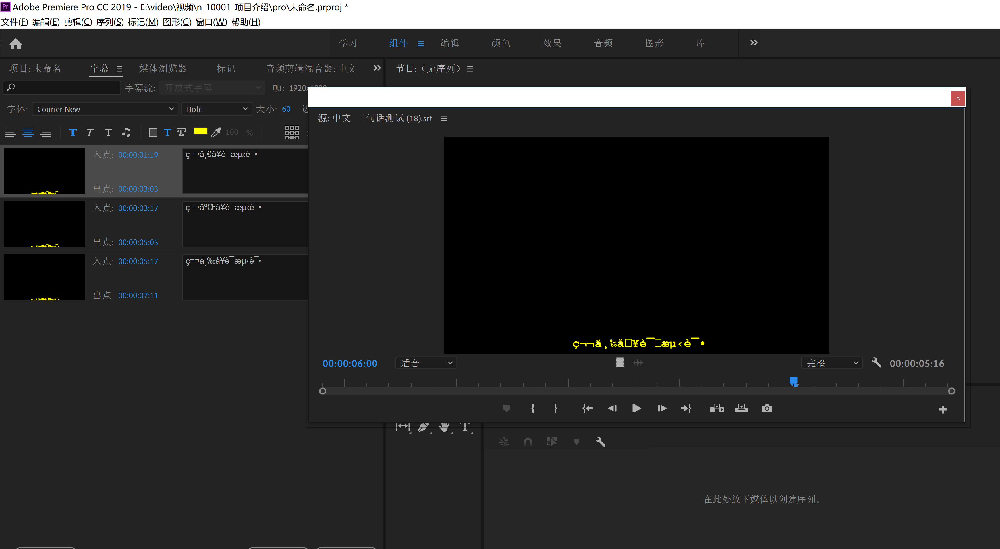
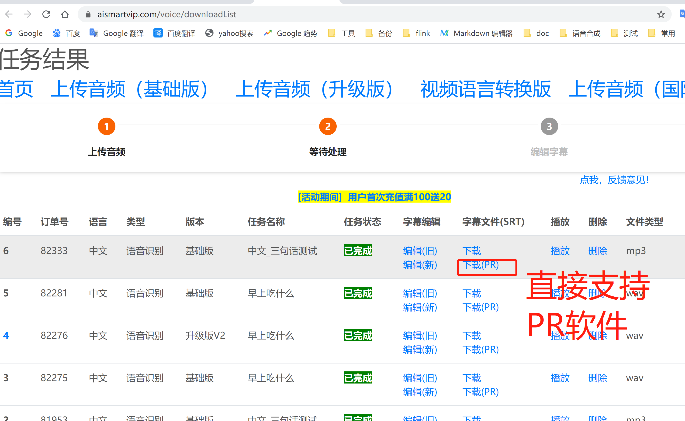
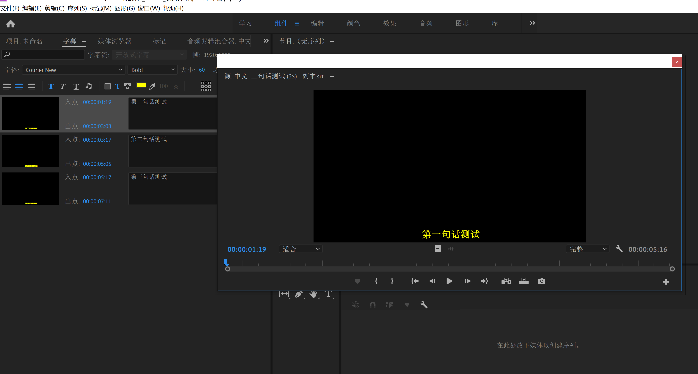

SRT字幕导入PR(中文乱码问题)(网站)
- 第一步:srt直接导入PR(乱码演示)
- 第二步:网站直接下载支持PR格式的SRT字幕文件
- 第三步：srt字幕格式展示
第一步:srt直接导入PR(乱码演示)
- srt格式直接导入PR会以乱码显示
- 需要对应格式的文件编辑才可以显示
- 每个软件默认的文件编码有区别、就如window默认编码是GBK,Mac系统默认编辑是UTF-8

第二步:网站直接下载支持PR格式的SRT字幕文件
- 将音频或视频文件上传到网站 https://aismartvip.com
- 待网站处理完成后，直接下载支持PR软件的srt字幕
- PR(Adobe Premiere Pro CC 2019)
- 表格列==>字幕文件(SRT)==>下载(PR)


1
00:00:01,770 --> 00:00:03,120
第一句话测试
2
00:00:03,720 --> 00:00:05,220
第二句话测试
3
00:00:05,700 --> 00:00:07,440
第三句话测试